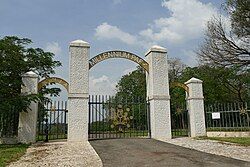

Abuja, the Federal Capital Territory (FCT) of Nigeria, home to the nation's capital, Abuja, is a modern and well-planned city known for its impressive architecture, vibrant culture, and political significance. Nestled in the heart of Nigeria, it features landmarks like Aso Rock, the Nigerian National Mosque, and Millennium Park. Visitors are drawn to FCT for its blend of tradition and modernity, serene environment, and growing arts and culinary scenes. It's an ideal destination for anyone interested in exploring Nigeria's governance, culture, and natural beauty in one place.
